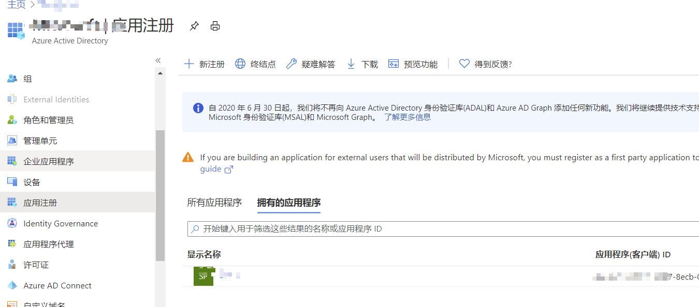

需求
由于AzureRM的PowerShell模块逐渐退出历史舞台，所以Azure的自动化登录要做一个比较大的返工，用AZ来做一个代码重构。
难点
公司发给员工的Azure账户使用了MFA（多因素认证），安全的同时，这也导致以前的PowerShell脚本无法使用了
针对开启MFA的账户，又想继续使用自动化的朋友来说，service principal解决起来相对比较简单。
从官网这里获取资讯，开始改造代码
这里的主要逻辑是，使用MFA后，你不可以使用账号密码的形式，在PowerShell中登录。
需要使用如下3要素：
- 应用ID
- 应用密码
- 租户ID
以及搭配 Connect-AzAccount -ServicePrincipal 的方式去登录。
应用ID和密码
那么如何获取应用ID和应用密码呢？
我们可以在Azure的Portal中，使用Azure Cloud Shell登录进去，或者在本地使用 Connect-AzAccount -UseDeviceAuthentication的方式，先登录一下Azure。然后执行如下的逻辑
1
2
3
4
5
6
#这里SPN2是随便起的
$sp = New-AzADServicePrincipal -DisplayName SPN2
警告: Assigning role 'Contributor' over scope '/subscriptions/xxxxx6-c9d0-4d95-8122-4f289f72ec2a' to the new service principal.
Account SubscriptionName TenantId Environment
------- ---------------- -------- -----------
xxxx-b6c7-4947-8ecb-0ceb7d1c9d62 500块 xxx-86f1-41af-91ab-xxxxx AzureCloud
执行完毕后，这个$sp对象已经拥有了我们后面要做的事情的部分信息
租户ID
通过PowerShell连接，我们还需要一个租户ID信息，这个可以通过图形界面获取，下图所示的位置。 Portal→Azure Active Directory→属性 或者直接访问，这是最简单的方法。 https://portal.azure.com/#blade/Microsoft_AAD_IAM/ActiveDirectoryMenuBlade/Properties
当然在已登录的PowerShell中也是可以的
1
$tenantId = (Get-AzContext).Tenant.Id
应用密码解密
现在有了$sp对象，应用ID就是 $sp.ApplicationId，应用密码就是$sp.secret。但是问题是，sp.secret是个标准PowerShell加密的对象。 下面的方法可以帮你解密(仅限本机)
1
2
3
4
5
6
7
8
9
10
11
12
$securestring=$sp.Secret
$ptr = [System.Runtime.InteropServices.Marshal]::SecureStringToGlobalAllocUnicode($secureString)
$serverpass = [System.Runtime.InteropServices.Marshal]::PtrToStringUni($ptr)
# $serverpass就是我们要的应用密码
$Secure=$serverpass|ConvertTo-SecureString -AsPlainText -Force
$pscredential2 = New-Object -TypeName System.Management.Automation.PSCredential("3f4e8213-b6c7-4947-8ecb-xxxx", $Secure)
#此处前半部分就是应用ID
Connect-AzAccount -ServicePrincipal -Credential $pscredential -Tenant 72f988bf-86f1-41af-91ab-xxxx
#此处后半部分为租户ID。
执行命令之后，系统会告诉你，本地存了一个json文件，事实上，这个json文件中也有我们刚才所需要的3种属性。
虽然这个加密聊胜于无，但是总比没有强。并且密码是一个guid串，而不是让我们手动输入，从这点来说，密码遗失不会让你的其他业务受到损失
删除连接
当你使用disConnect-AzAccount的时候，那么这个json文件会被清空。如果不使用断开连接，那么何时打开PowerShell，都会自动连接到这个订阅。
我们断连一下,可以看到Type是SPN类型的。
1
2
3
4
5
6
7
8
9
10
11
12
13
14
disConnect-AzAccount
Id : 3f4e8213-b6c7-4947-8ecb-0ceb7d1c9d62
Type : ServicePrincipal
Tenants : {xxxxx-86f1-41af-91ab-xxxx}
AccessToken :
Credential :
TenantMap : {}
CertificateThumbprint :
ExtendedProperties : {[Subscriptions, xxx-c9d0-4d95-8122-xxx], [Tenants, xxx-86f1-41af-91ab-xxx], [ServicePrincipalSecret, 440cb042-
0243-xxx-8031-xxx]}
世界友好
另外连接的时候可以指定云的区域，这一点是和以前一致的，方便我们登陆祖国云、国际云、德国美国云。
1
2
3
4
5
6
7
8
9
10
11
PS C:\Users\a9y> Get-AzEnvironment
Name Resource Manager Url ActiveDirectory Authority Type
---- -------------------- ------------------------- ----
AzureChinaCloud https://management.chinacloudapi.cn/ https://login.chinacloudapi.cn/ Built-in
AzureCloud https://management.azure.com/ https://login.microsoftonline.com/ Built-in
AzureGermanCloud https://management.microsoftazure.de/ https://login.microsoftonline.de/ Built-in
AzureUSGovernment https://management.usgovcloudapi.net/ https://login.microsoftonline.us/ Built-in
Connect-AzAccount -Environment AzureChinaCloud
管理账号权限
可以在AAD中如下位置进行配置。应用程序ID看起来和一个账号也是类似的。更多细节我也在研究 